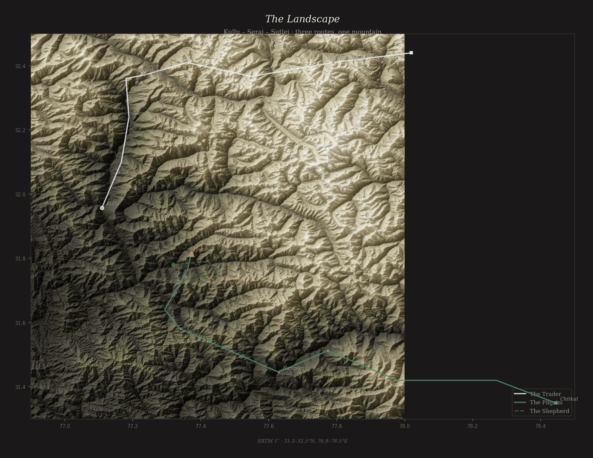
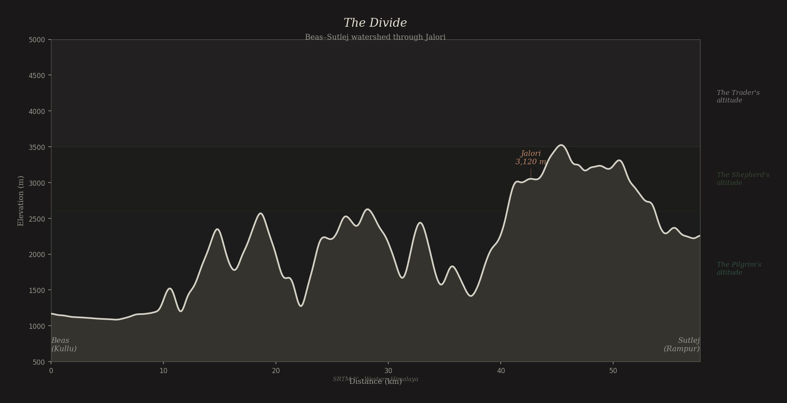
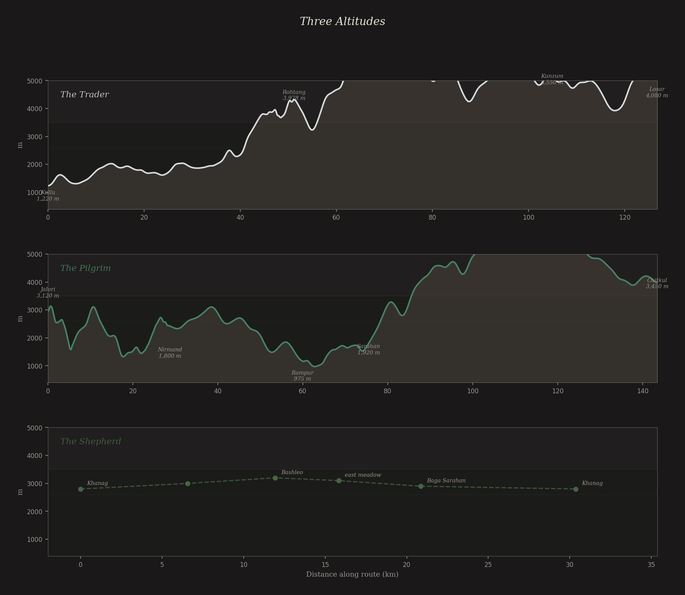
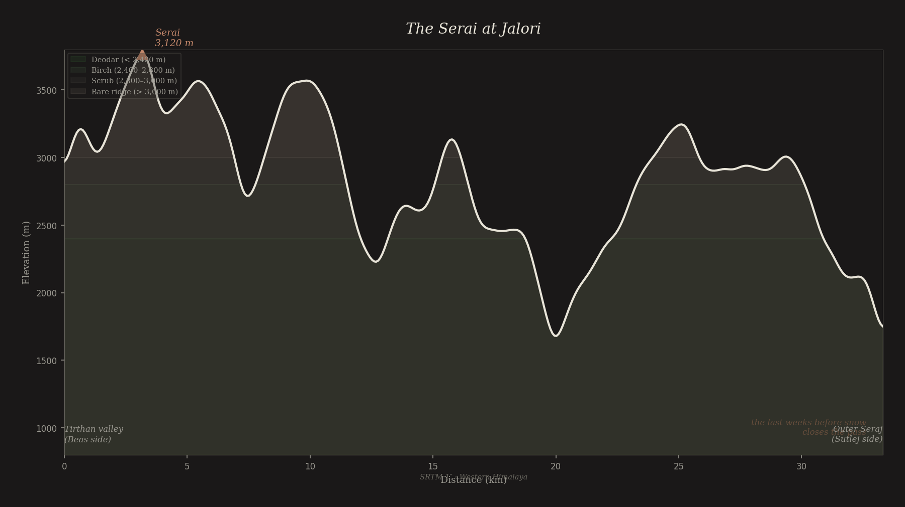
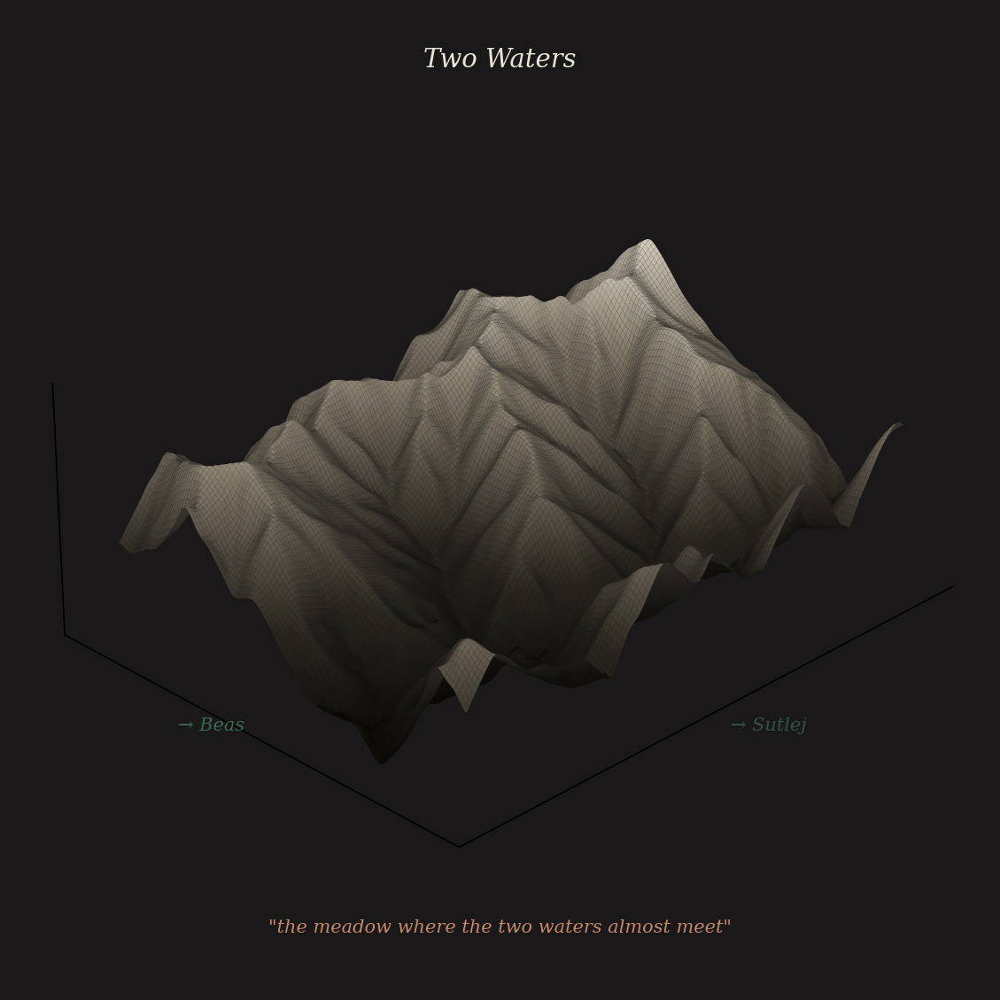

Near the top of Jalori Pass, in the last weeks before snow closes the road —
a composition companion
A route-book is not a diary. A diary records what the writer feels. A route-book records what the road offers: the gradient, the weather, the state of the bridges, the price of dal at the last dhaba, the bird that appeared on the stone wall at the turn above the gorge.
A diary faces inward. A route-book faces the trail.
Read them, the keeper said. You are the first person to hold all three at once.


Day 1. Kullu to Naggar. Load: 4 sacks rock salt, Mandi bazaar rate, 14 rs/kg. 2 bundles Kullu shawl — the fine weave, not the tourist grade. Total weight with pack frame: 38 kg on the lead mule, 32 on the second.
Day 5. Rohtang. The crossing. 3,978 metres. Wind from the north — steady, not gusting, the kind of wind that does not surprise you but does not stop.
Day 9. Kunzum. The pass. 4,550 metres. Below us, Spiti opened. Brown, vast, dry as a bone.
The rock salt will sell.
Day 1. Descent from Jalori to Shoja. The forest below the pass. Deodar, then oak, then rhododendron. First shrine: a small stone figure at the trailside, dressed in red cloth. I left a coin.
Day 3. Nirmand. The wooden temple. Kath-Kuni construction — alternating stone and timber, no mortar. The building that bends does not break.
Day 7. Sarahan. The Bhimakali temple. I dreamed of a meadow I have never visited — high, between two ridges, where the grass was the colour of old gold and a woman was weaving.
I will walk to Chitkul.
September. The meadow above Khanag. Grass still good. Water from the north stream. The sheep prefer the east-facing slope in the afternoon.
The loom in the hut. The pattern is natti — the one my grandmother taught me, the one that follows the river.
A pilgrim passed through — a woman walking alone, with a notebook. I gave her water but we did not speak much. She asked about a dream she had had.
I told her: you dreamed of me.



“the meadow where the two waters almost meet”
— from the grandmother's song, Book One
From the Thread Walker's notebook —
For the hours of composition
Three Route-Books — terrain from SRTM 1″ · 31–33°N, 76–78°E